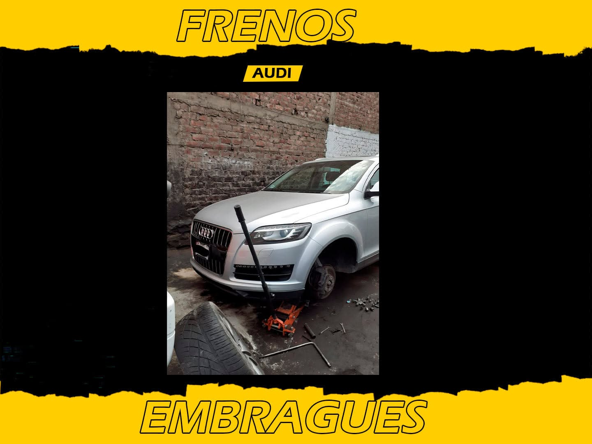
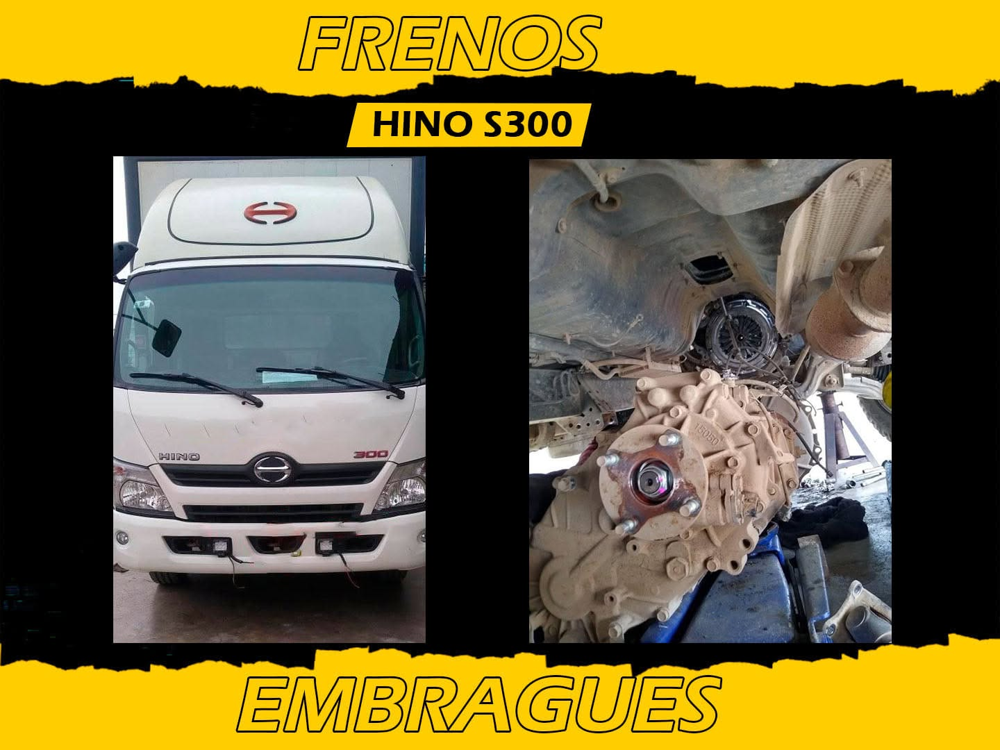
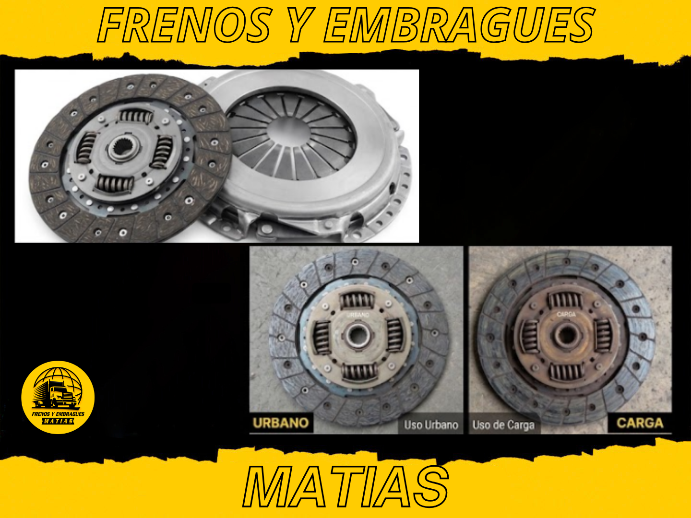
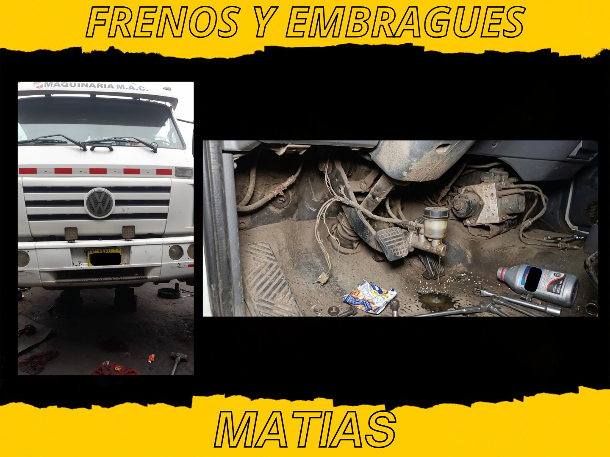
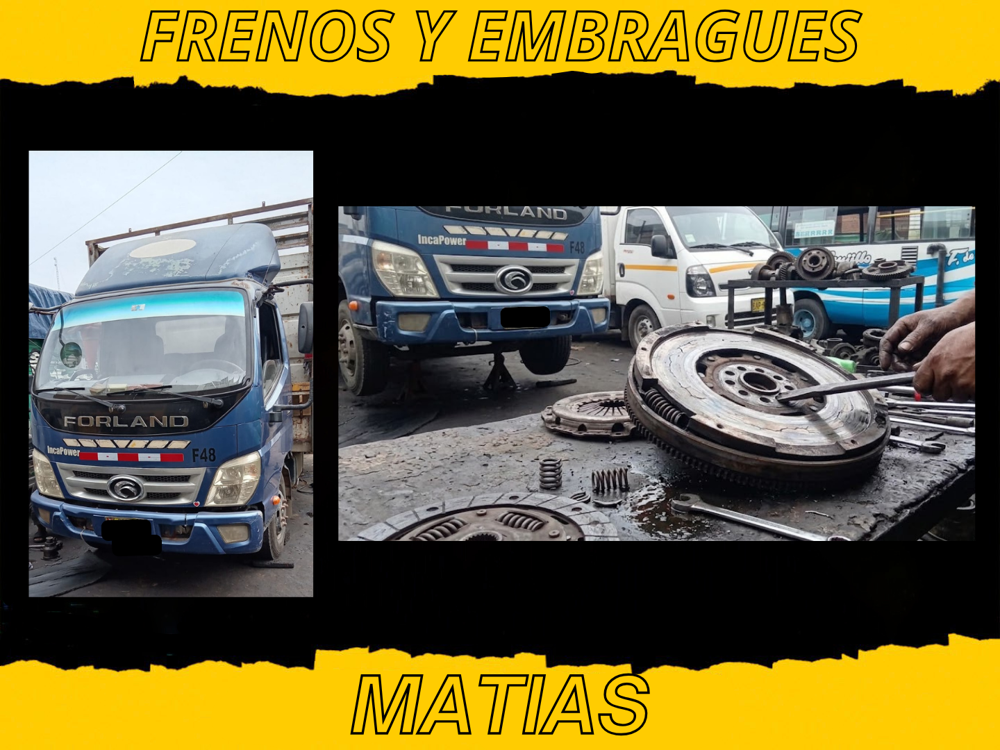

Tips y noticias de mantenimiento automotriz
Guías escritas por nuestros técnicos para que entiendas qué le pasa a tu vehículo, antes de llegar al taller.

¿Cuándo cambiar las pastillas de freno?
Las 5 señales que indican que ya es momento de revisarlas, antes de que dañen el disco.

7 síntomas de que tu embrague está fallando
Del pedal esponjoso al olor a quemado: aprende a reconocerlos a tiempo.

¿Cuánto dura un kit de embrague?
el embrague se desgasta por fricción cada vez que se usa para acoplar el motor

Mantenimiento de frenos para flotas
Los vehículos comerciales someten el sistema de frenos a un desgaste muy distinto.

Pedal de freno esponjoso
Un pedal de freno sano se siente firme desde el primer contacto: aplicas presión...

Señales de que el volante bimasa está fallando
El volante bimasa es un componente que muchos vehículos modernos usan en lugar del volante...

Pastillas cerámicas, semi-metálicas u orgánicas
Las tres familias de pastillas se diferencian principalmente en el material de fricción...